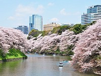
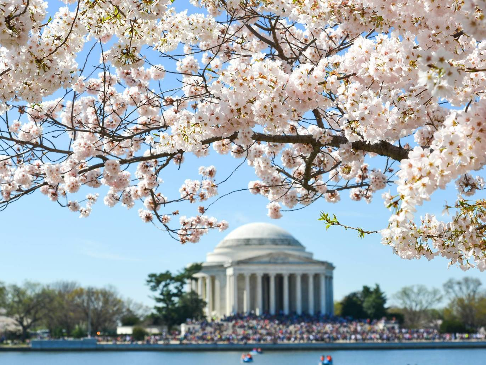
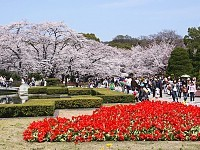
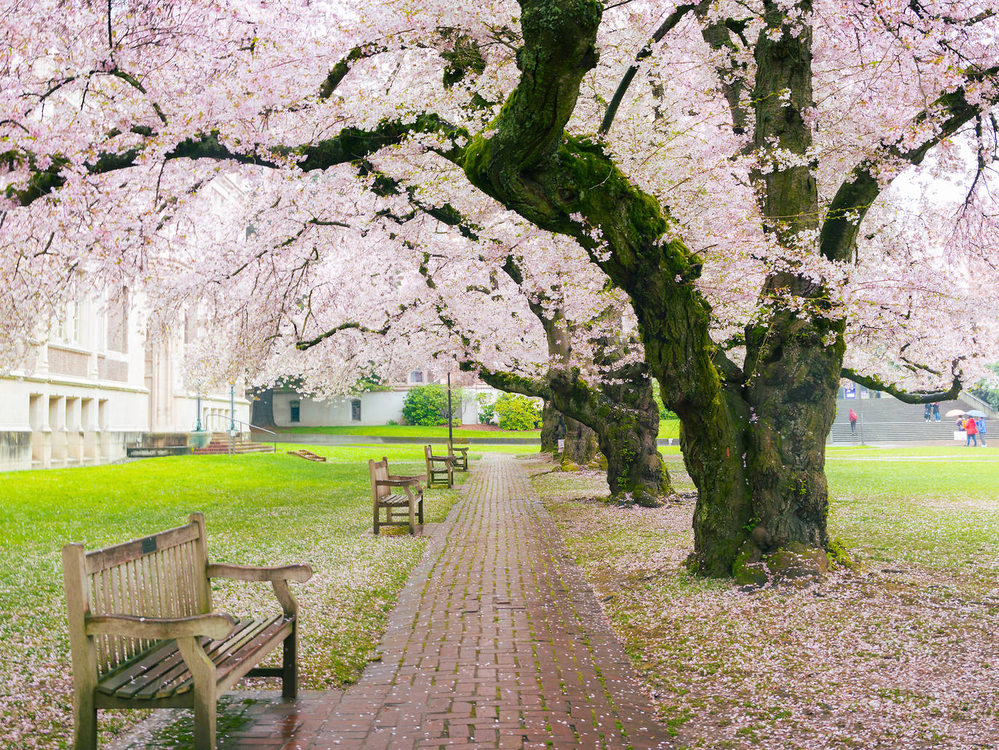
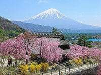
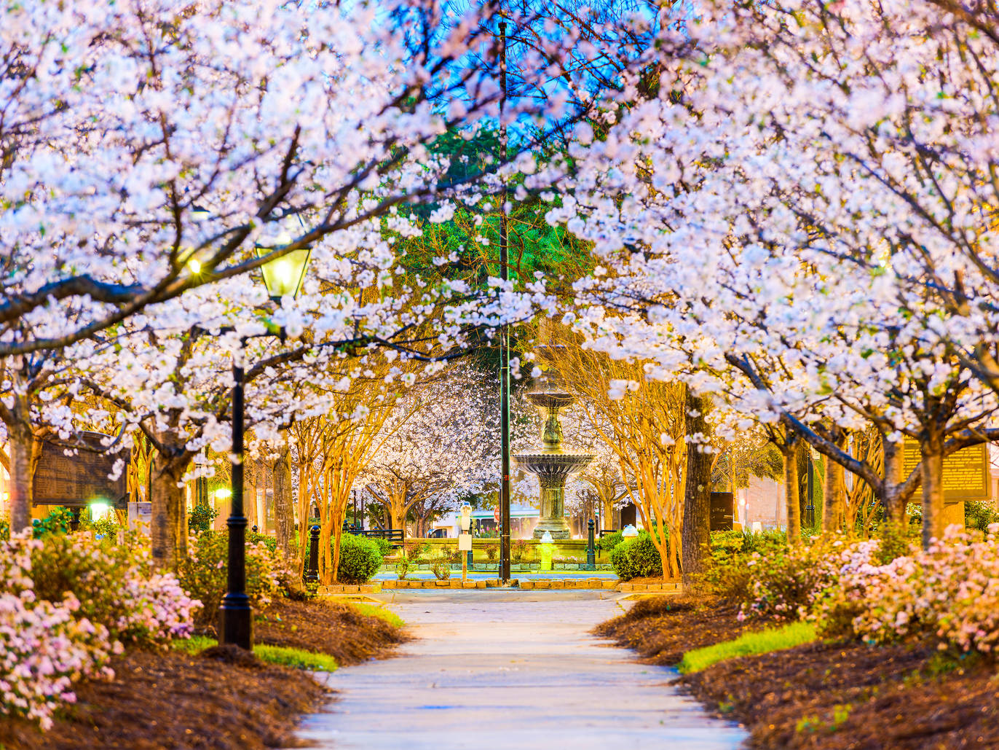

In Japan |
In the United States |
|---|---|
| Tokyo | Washington DC |
| Kyoto | Seattle, Washington |
| Mount Fuji | Macon, GA |
Hover over the locations to see a picture!
Cherry Blossom trees like USDA Hardiness zones 5-8
which occur in the lower middle United States and extends into the south. "Thetreecenter.com" has lots of helpful tips about planting a cherry blossom tree.
Helpful Growing Tips
Some of these tips include the type of sunlight, the soil, and how much water the trees like the best.
Cherry Blossoms bloom in the spring, with most trees reaching the fullest blooms at the end of March to the middle of April.
The blooming period depends on the climate where the trees are planted, some places with warmer temperatures can see blooms in the
middle of January. There are many different varieties of Cherry Blossom trees, that have blooms in different colors like pink, yellow, or white.
There are also different tree shapes/forms such as the triangular, weeping, flat-topped, etc... The number of petals on a bloom also varies, with
5 petals being the most common.
To learn more about Cherry Blossom Trees visit
Cherry Blossom Guide
Here are the sources I used for information and pictures.
1: Helpful Growing Tips 2: Cherry Blossom Locations in USA 3: Cherry Blossom Guide 4: Top Tokyo Viewing Spots 5: Cherry Tree Varieties